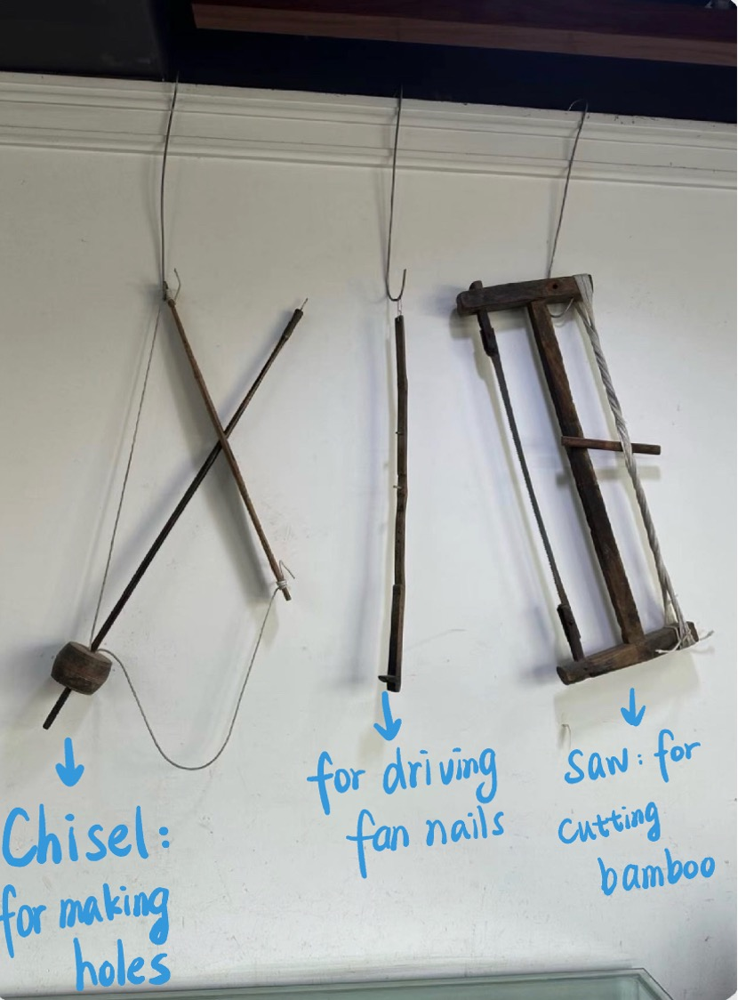
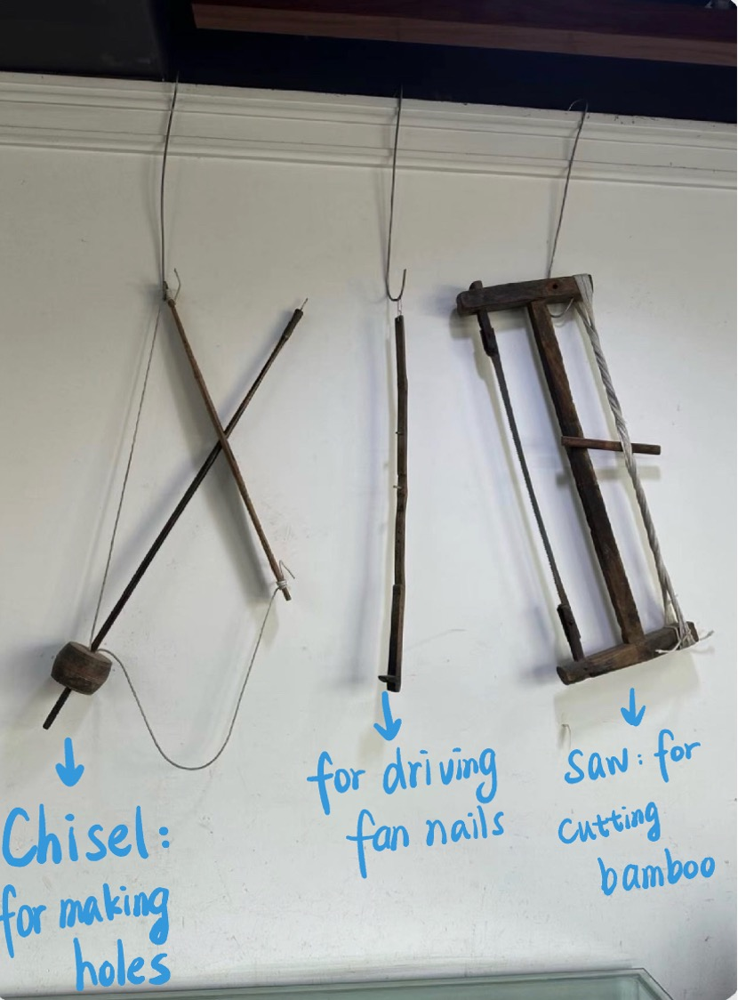

Black Paper Fan
The Black Paper Fan, recognized as a national intangible cultural heritage, is a traditional craft deeply rooted in Chinese culture. As an inheritor of this unique art form, I established the Fun Fan Club at my school, where I teach students about this craft. Additionally, I visit a welfare center in Hangzhou to guide children in painting on fans.
Originating from Hangzhou, the black paper fan is crafted with durable black paper and bamboo or wood frames, celebrated for its elegant design and intricate craftsmanship. It serves not only as a practical tool but also as a symbol of cultural heritage and artistic expression. The dark paper provides the perfect canvas for traditional paintings or calligraphy, making each fan a work of art.
Beyond its beauty, the black paper fan is remarkably durable, capable of withstanding boiling water for 40+ hours without the fan surface detaching from the frame. This durability reflects the high-quality craftsmanship and materials used, ensuring the fan's long-lasting value and cultural significance.


 
